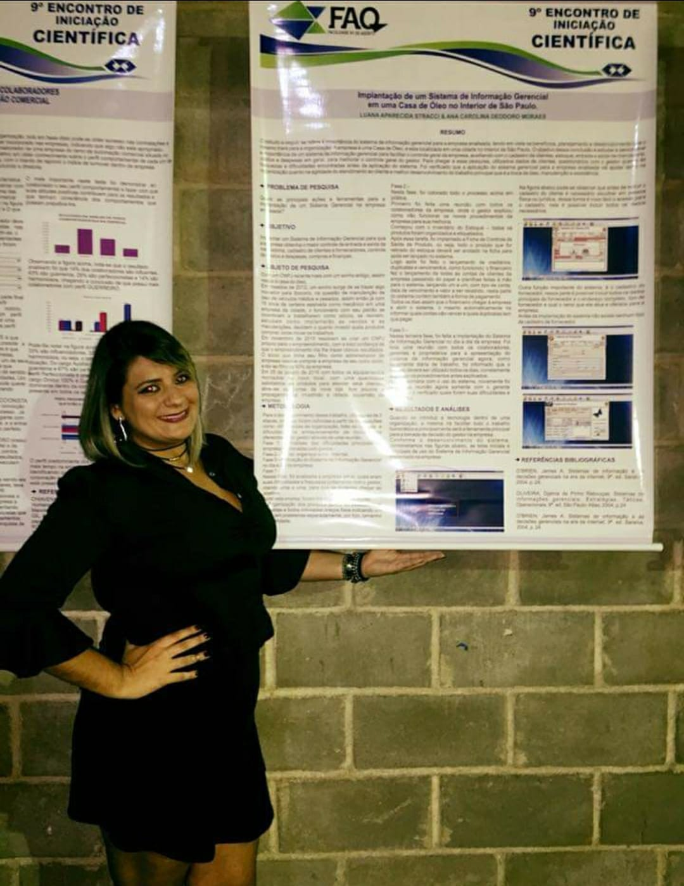
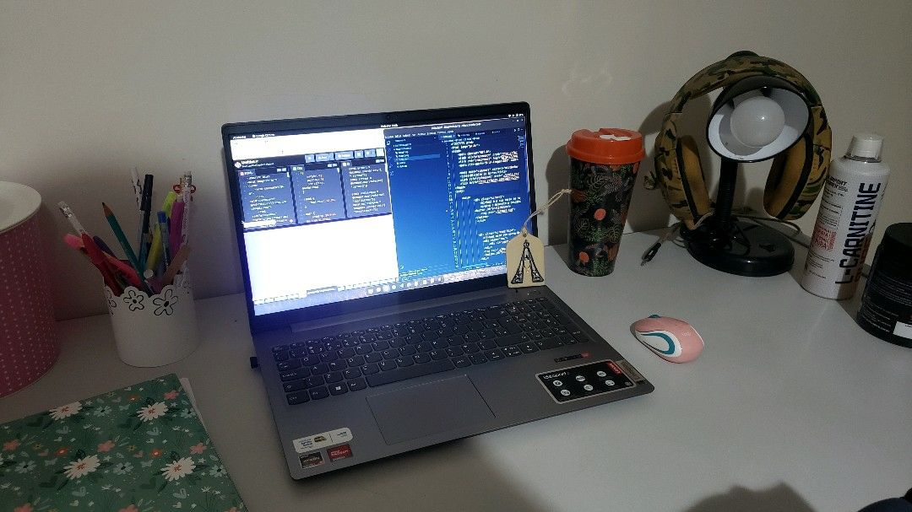

O ano era 2017
Ano de Formatura: Administração

Formada em Administração de Empresas desde 2017, o objetivo era trabalhar na área, e assim foi.
Trabalhei na Área de Controladoria de Hotel. Em 2018 começei a trabalhar no setor financeiro de um hospital e em 2020,
começei a trabalhar como Auxiliar Administrativo de um loja. Sempre gostei muito do que faço, mas não AMO. Trabalho na área atualmente
pois preciso e até então, não tinha outra opção! Então, em Setembro de 2022 decidi iniciar a minha Transição de Carreira
Setembro 2022
Transição de Carreira

Conheci o Mundo da Tecnologia. Quem diria, eu que não entendia absolutamente nada sobre programar. Conheci a Rocketseat muito por acaso e decidi encarar o desafio. Sei que ainda falta muito chão, mas eu dei o primeiro passo. O que vejo e sinto hoje, estudando, é que programar é algo totalmente diferente de tudo o que eu estudei. Aprendi uma lição que estou levando comigo todos os dias: na programação não preciso decorar, preciso entender!
Transição de carreira não é fácil, mas é desafioador, prezeroso e satisfatório, pelo simples fato de você conseguir resolver ou consegui entender cada dia um pouquinho mais.